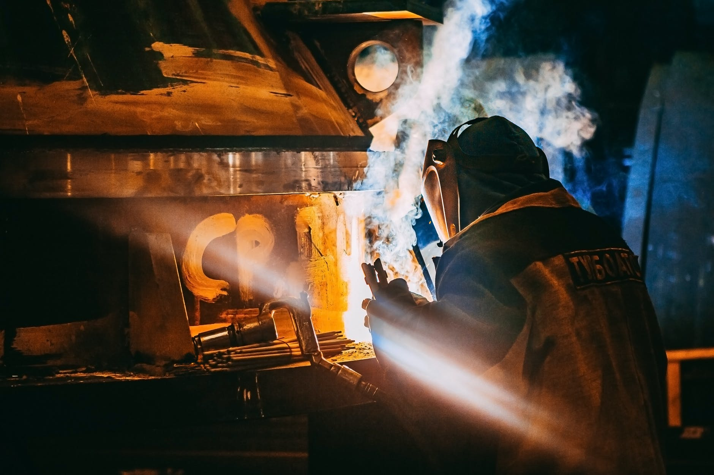

Procesos de Manufactura
Objetivos del curso:
Conocer los principios básicos de los procesos de manufactura para la transformación de los materiales, así como la maquinaria adecuada y la tecnología requerida para seleccionar el proceso y la tecnología necesarios para la manufactura eficiente de componentes mecánicos.

Sitio de prueba, diplomado: Innovación de Procesos de Gestión Educativa por medio del uso de las TIC.
Académico: Kin Yael Villafaña Moran.